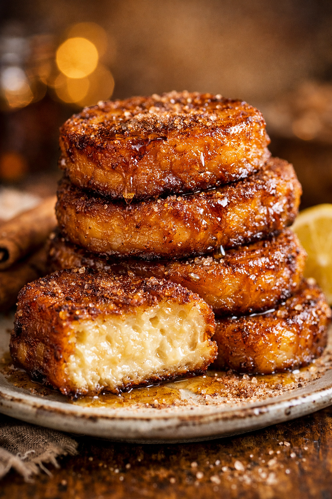

De alimento humilde para la recuperación a la joya suprema de la repostería de Semana Santa.

La torrija representa uno de los pilares de la cocina de aprovechamiento en Occidente. A lo largo de dos milenios, ha evolucionado desde una necesidad calórica romana hasta convertirse en un símbolo de identidad religiosa y sofisticación gastronómica.
Los primeros indicios aparecen en la obra De re coquinaria de Marco Gavio Apicio. Los romanos elaboraban una variante sin huevo llamada aliter dulcia. Consistía en rebanadas de pan de trigo fino, sumergidas en leche y tostadas o fritas, servidas con abundante miel tibia. No era un postre, sino una técnica para reaprovechar el pan.
En el siglo XV, el término "torrija" se documenta en la literatura española. Juan del Encina las vincula con el postparto. Debido a su densidad nutricional, los médicos las prescribían para favorecer la recuperación de las parturientas y estimular la lactancia. Era un reconstituyente de fuerza antes de ser un manjar festivo.
La asociación con la Semana Santa surge por la abstinencia de carne. Durante la Cuaresma, se buscaban alimentos saciantes y económicos. Las torrijas, con su simbología (el pan como cuerpo de Cristo), se convirtieron en el dulce litúrgico por excelencia, popularizándose las versiones con vino en entornos monásticos.
Hoy, la torrija ha entrado en la alta cocina. Desde las tabernas centenarias de Madrid hasta los restaurantes con estrella Michelin, se experimenta con panes brioche, infusiones de vainilla de Madagascar y caramelizados perfectos con soplete, elevando la receta tradicional a una experiencia sensorial compleja.
Distribución del mercado durante Semana Santa.
A diferencia de la French Toast, la torrija española se baña completamente antes de freírse, logrando un corazón cremoso tipo flan que es único en la repostería internacional.
Selección curada de técnicas y tendencias en redes sociales.
Clase magistral de uno de los chefs más reconocidos de España (6 estrellas Michelin) sobre la perfección técnica.
Explora un negocio original que revoluciona la torrija con ingredientes y toppings que no suelen ser habituales.
Una persona anónima nos enseña paso a paso cómo lograr la torrija perfecta utilizando pan brioche para una textura ultra cremosa.